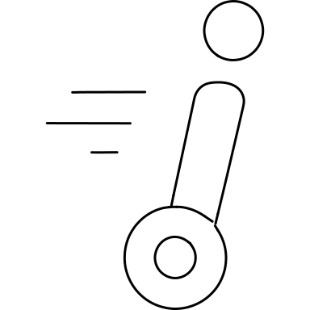
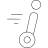
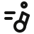
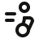
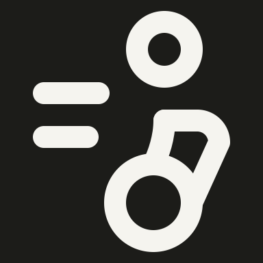

20 revisions · gpt-6 · model valid · full gate pass · zero warnings
1. solo/person-on-segway


Original

Rejected

Fixed light

Fixed dark
Rejected rider had an undersized head and rigid boxed torso. Enlarge head, curve the rider into the wheel, soften the handlebar and preserve two speed strokes. Omit smallest speed mark.
Rejected machine looked like a narrow cabinet. Widen its face, add a distinct product mark and delivery compartment, and retain the reaching person. Four tiny source boxes reduced to one stocked compartment.
Four tiny product boxes reduced to one product mark and a delivery compartment.
Rejected reader had a tiny book and artificial shoulder loop. Enlarge the open newspaper and replace the loop with a short central torso behind the fold. Text omitted for clean spacing.
Rejected bandage was horizontal and sling a central triangle. Enlarge the head for a diagonal wrap, and show the arm entering an asymmetric supported sling.
Lower torso shortened to make room for the diagonal head wrap and sling.
Rejected pie became a plain half-disc and lost the connected rising zigzag. Restore an open circular pie with a radial sector and a continuous growth arrow.
No defining part omitted; circle and rising line share a coherent contour.
Rejected piggy bank was a boxy animal without a rounded back. Restore a round belly, arched rump, ear and two short feet beneath the separate coin. Tail and coin denomination omitted for spacing.
Rejected Pikachu had plain antenna-like ears. Restore long pointed outlined ears and wide cheeks with centered paired eyes. Omit tiny mouth, cheek patches and ear-tip divisions for spacing.
Tiny mouth, cheek patches and ear-tip divisions omitted.
Rejected Poseidon had a small head and rigid triangular robe. Restore a larger head, broad draped robe and rounded trident, preserving the hand holding the shaft. Crown band and tiny robe fold omitted for spacing.
Crown band and small robe fold omitted; robe, head and held trident retained.
Rejected motion marks were comma dots. Restore two long sweeping trails, larger head and smooth torso with clear running limbs. Four source trails reduced to two.
Rejected scientist was oversized goggles without a coat. Restore smaller round spectacles with visible lenses, circular face, broad shoulders and lab-coat collar.
Small lapel notches simplified to a clear V collar.
Rejected Buddha looked like a bell on a cushion with a center divider. Restore a rounded robed torso, diagonal robe edge and broader crossed-leg base. Halo rays omitted to preserve figure proportions.
Small halo rays omitted to preserve body proportions.
Rejected guinea pig looked like a short-legged dog with a square haunch. Restore a full rounded seated rump, tiny round ear and short front foot. Omit small mouth and inner haunch line for spacing.
Rejected kangaroo had a block-shaped head and absent long ears. Restore an upright rounded ear, tapered muzzle, round haunch and long raised tail. Tiny eye and forepaw omitted for spacing.
Tiny eye and forepaw omitted; one upright ear retained.
Rejected meditator had a flat trapezoid and compressed legs. Restore taller proportions and relaxed mirrored arms around a broad rounded crossed-leg base.
Leg crossing reduced to a broad angled and rounded base.